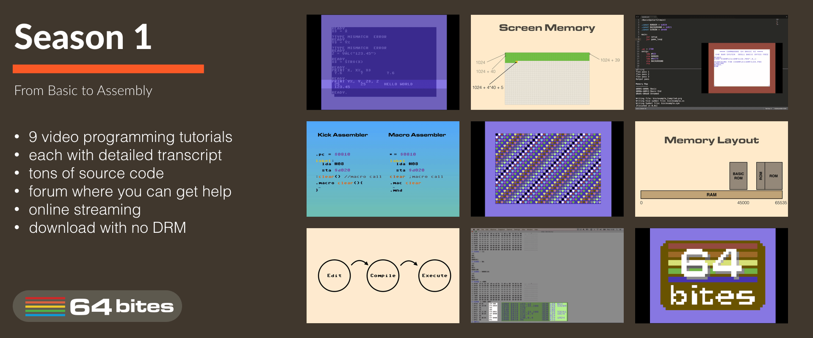
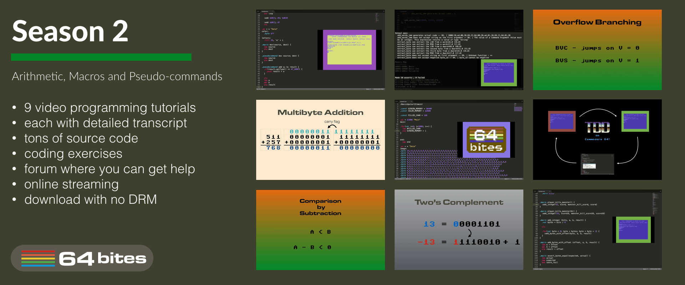

Hello!
I hope you enjoyed my talk
Lost Art of Code Optimization (or why you should grok Commodore 64)
I know you!
You craft beautiful object-oriented and functional code every day. I don't need to tell you how to test and maintain it well. But I want to show you something different…
Remember Commodore 64? The highest selling computer model of all time?
Even though it's not produced anymore for more than two decades, each year at least seventy new games are released! Every new C64 program is faster and prettier, even though it's processor can't even multiply. Meanwhile, your smartphone gets slower with every update…
This talk will show you how Commodore 64 programmers 'break' hardware constraints to create jaw-dropping demos. It will show you an easy and fun way to practice writing low-level code.
Something you'll never do at your day job!
Get the source code and slides from the talk
To get the most of the talk I've prepared a small gift for you.
A gift from the 64 Bites project
64 Bites is a series of short video lessons that can teach you how to program The Commodore 64!
Each episode takes just 5 minutes to watch, so it can easily fit your busy schedule. Videos come with full transcript, source code, and exercises. Each one focused on explaining a single thing in depth.
In other words, each video is a tasty bite of C64 knowledge that brings you closer to finally writing that game and demo. The series starts literally from basics of BASIC but quickly transitions into the assembly, where the real fun happens.
If you ever desired to create games or demos for this fantastic machine. I can help you get started.
Get the first nine episodes for free!
As an attendee of the Dev# 2016 you can download the Season 1 package for free.

Season 1 is usually worth $19.99 and contains
- first nine episodes (50+ minutes of DRM-free videos in total),
- transcripts (7500+ words),
- source code examples (450+ LOC) and
- programming exercises for each episode.
Get next nine episodes for 50% off!
If you find the videos fun and want more, I can offer you the next nine episodes for half the price.

Enjoy!
Michał Taszycki
founder of the 64 Bites project.